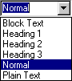

| |
| A propos Commandes Sommaire Pourquoi AbiWord? Généralités Environnement SDI Vs. MDI Installation Windows Linux Intel Linux PPC BeOS Intel BeOS PPC Solaris FreeBSD Les bases #1 Les bases #2 La saisie Le formatage Les paragraphes Les tabulations Les colonnes Les sections Les styles Insertion d'objet Imprimer Rechercher / Remplacer Personnalisation Raccourcis clavier abisource.com FAQ Crédits |
Les stylesLes styles servent à automatiser la mise en forme de paragraphes. L'application de styles permet d'accélérer la mise en forme de textes et également d'homogénéiser la plupart de vos documents. AbiWord propose pour le moment six styles prédéfinis:
Pour appliquer un style à un paragraphe, placer le point d'insertion dans le paragraphe souhaité puis choisir le style en cliquant sur la petite flèche à droite de la commande Style de la barre d'outils Mise en forme puis en sélectionnant le style désiré dans la liste de choix.  |